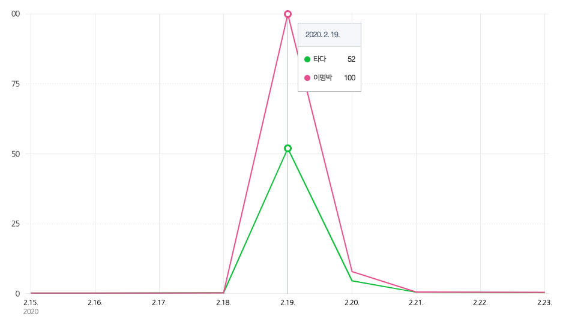
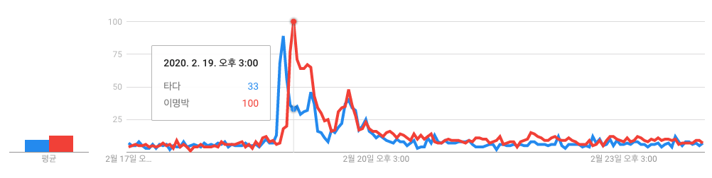
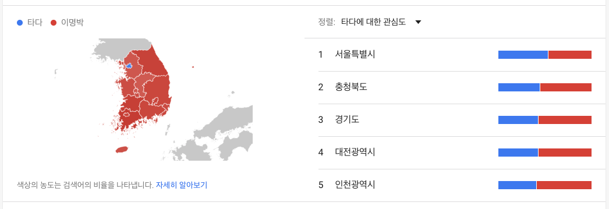

[검색 트렌드] 타다 1심 vs. MB 2심
서울은 타다, 나머지 지역은 MB

2020년 2월 19일은 공교롭게도 중요한 재판 두건의 결과가 동시에 나왔다. 오전에는 타다 1심 선고가 있었고, 오후에는 MB의 2심 선고가 있는 날이었다. 국내 모빌리티 업계의 향방에 큰 영향을 미칠 타다 재판과 한때 온 국민의 관심사였던 ‘다스 실소유주'에 대한 판단을 담고 있는 MB 2심 재판에 대한 사람들의 관심은 어땠을까?
주변이나 SNS 타임라인의 관심은 타다 재판 1심 선고에 쏠려 있었던 것 같다. 몸담고 있는 업계 탓이 크고, 페이스북 지인들도 다들 테크 트렌드에 평균 이상으로 관심이 높은 사람들이 많아서 그랬던 것이라 생각된다. 개인적으로는 전자가 이미 지나간 과거에 대한 판결이었다면, 후자는 미래에 대한 것이어서 더 의미가 있었던 것이라고 해석하고는 있지만, 전국 평균적인 트렌드와는 사뭇 달라서 놀라웠다.
개인적인 관심도와 달랐던 네이버/구글 검색 트렌드
그러나 네이버, 구글의 검색 트렌드는 다소 달랐다. 네이버 검색어 트렌드는 재판 선고 당일(2020년 2월 19일) 이명박 전 대통령에 대한 관심이 최근 1주일 사이 가장 촤대값인 100을 기록했는데, 타다는 당일 52를 기록하는데 그쳤다. 네이버 검색어에선 타다 재판에 대한 관심이 MB 재판의 절반에 그친 것이다. 선고 이튼날인 2월 20일에도 MB에 대한 관심도가 타다를 넘어서는 것으로 나타났다.
{kind=link}

구글 트렌드에서는 격차가 줄기는 했지만, 역시나 MB에 대한 관심이 타다를 넘어선 것으로 나타났다. 시간대별로 살펴보면, 타다의 선고가 있었던 2월 19일 오전에는 타다에 대한 관심이 급상승하면서 당일 정오에는 타다에 대한 관심도가 96를 기록하며 MB에 대한 관심도 19를 압도하였다. 그러나 MB에 대한 선고가 나온 이후인 오후 3시에는 타다에 대한 관심도는 33까지 떨어진 반면, MB에 대한 관심도는 최근 1일주일간 최대인 100을 기록하였다. 이후에도 대체적으로 MB에 대한 관심이 타다에 대한 관심을 넘어서면서 1주일 간 평균적으로는 MB 14, 타다 11을 기록하면서 MB에 대한 관심이 높은 것으로 나타났다.
{kind=link}

구글 트렌드의 지역별 결과는 매우 흥미로웠다. 전국 모든 광역시도에서 MB에 대한 관심도가 타다를 넘어서는데 반해서, 유독 서울만 타다의 관심도가 MB보다 높은 것으로 나타난 것이다(아래 좌측 지도의 파란색이 서울). 상위 5개 광역시도의 관심도 현황을 보면, 서울은 타다 54%, MB 46%로 타다에 대한 관심이 높게 나타난데 반해서, 상위 2위 이하는 충청북도 45% vs. 55%, 경기도 43% vs. 57%, 대전 43% vs. 57%, 인천 41% vs. 59% 등으로 모두 MB에 대한 관심이 높게 나타났다.
{kind=link}

사람은 서울로?!
지역별 관심도의 차이는 아무래도 타다가 주로 서비스하고 있는 지역이 서울인 영향이 컸던 것으로 보인다. 현재는 일부 수도권 지역까지 서비스를 확대하였지만, 여전히 타다가 자주 출몰하는 지역은 서울이다. 평상시 타다를 접하기 힘든 지역은 아무래도 타다에 대한 관심이 낮을 수밖에 없는 것으로 보인다. 눈에서 멀어지면 마음에서도 멀어진다는 속담이 들어맞는 결과다.
“Out of sight, out of mind.”
최근 모빌리티 서비스를 비롯한 다수의 O2O 서비스들이 출시하는 트렌드도 반영한 모습이다. 주요 O2O 서비스들은 1000만 명의 빅마켓 서울에서 최초 서비스를 출시하는 경우가 많다. 특히, 서울에서도 구매력이 높고, IT관련 이해도가 높은 것으로 추정되는 강남지역이 서비스 출시 1순위인 사례가 많다. 이후 인구 2000만 명의 수도권으로 서비스를 확장하는 전략을 취한다. 이번 타다에 대한 관심도도 이러한 맥락과 무관치 않아 보인다. 혁신 서비스의 지역간 격차 등 여러모로 시사하는 바가 크다고 생각된다.
한편, 타다에 대한 관심도가 상대적으로 낮았던 5개 광역시도는 전라남도, 전라북도, 강원도, 부산, 대구 순으로 나타났다. 특히, 전라남도와 전라북도에서 MB에 대한 관심이 74%, 72%로 매우 높게 나타났는데, 아무래도 지역 유권자의 평균 연령과 정치적 관심이 반영된 결과로 판단된다. 연령별 관심사 분석은 다음 기회에
정리하며…
간단한 분석으로 여러 인사이트를 얻을 수 있다는 점에서 검색 트렌드 분석은 의미가 있다. 그러나 검색 트렌드가 얼마나 현실을 잘 반영하고 있는지는 조금 더 연구가 필요하다고 생각된다. 한때, 검색 데이터로 독감 예측 서비스를 내놓았던 구글 서비스를 네이처, 사이언스 등 주요 학술지에서 비판한 사례도 있고, SNS에 대한 연구들에서는 실제보다 편향된 결과들이 나온다는 결과들이 나오고 있다. 끼리끼리 효과, 심리적 편향, 필터버블 등이 실제보다 왜곡된 결과를 만들 수 있다는 것이다. 타다 vs. MB 같은 비교적 통제된 분석이 가능한 경우에는 검색 트렌드 분석을 무난하게 쓸 수 있겠지만, 선거 예측, 자산가격 예측 등에서는 데이터를 보다 정제할 필요가 있을 것으로 보인다.
)